|
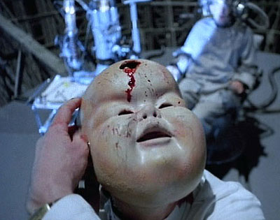 Brazil"Because I dislike being quoted, I lie almost constantly when talking about my work." In 1975, former Monty Python cast member and celebrated animator Terry Gilliam had a great idea for a movie. Along with playwright Tom Stoppard (Rosencrantz and Guildenstern are Dead), he'd write and direct a sweeping, epic masterpiece about a world gone wrong. The film would take place "somewhere in the twentieth century." It would feature an oppressive, totalitarian government which systematically stripped the public of its basic freedoms in favor of an ostensibly fraudulent and hopeless war on terrorism. The term "information retrieval" would be used implicitly throughout the film, a euphemistic nickname for the gruesome torture techniques applied to suspected terrorists as they're kidnapped, secured, and readied for interrogation. The mechanics and systems of this "fantastical" world would need to be absurd and contradictory, serving only to bury its chief directors under bureaucracy, red tape, and endless coils of administrative paperwork. Identification cards, DNA scans and security checkpoints would round out Gilliam's view of a monolithic, technologically-driven society, and patriotic propaganda posters telegraphing a 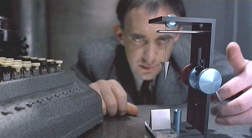mandatory us-or-them mentality would be broadcast regularly to all citizens amidst the false cheeriness of a consumer theme park culture. Brazil would be an opus of visual metaphors, bleak slapstick, and unconventional narrative awash in elaborate special effects, apocalyptic scenes of destruction, and a general lack of discipline.The plot would sprawl and wander through corporate conspiracies, office politics, oedipal nightmares, and the operatic love-struck daydreams of Sam Lowry, the story's central protagonist. Gilliam's 1981 movie Time Bandits had grossed nearly $36 million in the United States alone, despite being rejected by every major studio and distributor. In the early eighties, Brazil was given a green light. Together with independent producer Arnon Milchan, Gilliam and Stoppard pitched their idea to Universal and Fox. Universal secured the American rights, Fox got the international, and the struggle to make it all happen would end up being an epic battle unto itself. 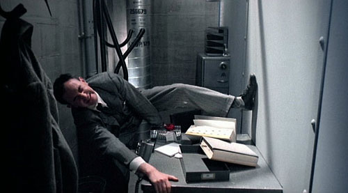"Brazil was a film that sat around for some years," Gilliam remembers. "I mean like ten years I'd been sort of thinking about this thing. It's all about my own frustrations and my seeming inability to achieve what I wanted to achieve and my inability to affect a system that is clearly wrong. The fears of Brazil are not so much that the world is spinning out of control because of the system, because the system is us. What Brazil is really about is that the system isn't great leaders, great machinating people controlling it all. It's each person performing their job as one little cog in this thing and Sam chooses to stay a little cog and ultimately he pays the price for that." Gilliam wanted Brazil to emulate Port Talbot, a small steel town in South Wales where everything the eye can see is blanketed with a fine layer of gray iron ore dust. "Even the beach is completely littered with dust, it's just black. I had this image of a guy sitting there on this dingy beach with a portable radio, tuning in 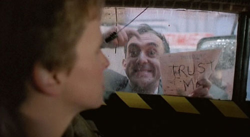these strange Latin escapist songs like Brazil. The music transported him somehow and made his world less gray." Over time, this man on the beach evolved into Sam Lowry. The set pieces and sound stages which really carry Brazil were intended
to look like an entire century compacted into a single moment -- i.e. the 1940s
and the 2000s smashed together. Filming took place all over the world in order
to accommodate the richly textured look Gilliam intended. The clerk's pool where
Sam Lowry works in the Records Department was shot in an abandoned grain mill
in London's Dockland. The mill was sprayed with gray paint, and flour sifters
were turned into benches. This same location was used for the corridors of the
Information Retrieval department where Sam goes after being promoted: the giant
holes in the ceiling are actually the bottoms of twelve story high grain silos.
The truck chase sequence (where Lowry and Jill Layton outrun security pursuit
vans) was filmed at the Marne la Vallee in France, a huge apartment complex
designed by Ricardo Bofil and the current site of Euro Disney. The Information
Retrieval chamber where Sam is interrogated was filmed in a cooling tower at
a power station in Southern England. Stunt men on cables descended a distance
of 170 feet to make their way inside. In the editing room, Gilliam 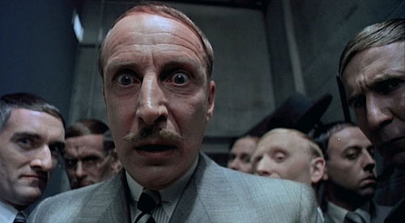found
himself looking at hundreds of reels of truly astounding and remarkable footage,
and while biting his nails he wondered how in the world he could possibly make
this film any shorter than five hours. Gilliam's modest, 20-week shoot ended
up lasting nine months and barely recouped its $15 million dollar budget --
largely the fault of producer Thomas Schuly who unwisely announced that Brazil
was going to be the biggest production since Cleopatra. However, Universal CEO Sidney Sheinberg was less than pleased. He sent a protest to Milchan, reminding him that he and Gilliam were violating their contracts by talking about Universal's version of Brazil, and they certainly shouldn't be showing it, 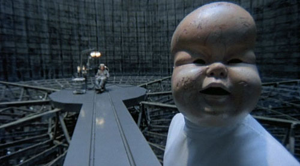since there were a few "unresolved issues" about the movie which needed to be addressed. It turns out that after Universal ran some test screenings in America, pressure was building to "edit" the film before it could be released. See, it might "play better" if the running time was cut from 142 minutes to ninety-seven. And it needs a happy ending. Sheinberg himself, whose own executive producer credits include Playing Mona Lisa, Slappy and the Stinkers, and The Pest, began hacking away at the film. His editors (Bill Gordean and Steve Lovejoy) created a version which looked less like Gilliam's masterpiece and more like a mawkish, cloying love story. Subtracted were necessary dream sequences offering contrast to the gray landscape. Gone were essential dramatic points along a cohesive plot. What was left? Spliced, disparate elements of vague humor and footage involving Sam pursuing his "dream girl" Jill Layton. Gordean and Lovejoy's ultimate crime was lopping off the entire ending sequence involving Sam Lowry's interrogation and loss of sanity. Instead, the film ends with a pastoral countryside pullback, where Sam and Jill finally consummate their relationship. Musical composer 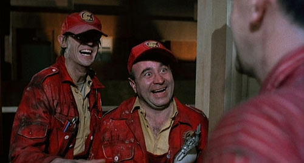Michael Kamen's brilliant orchestral, symphonic score was replaced as well -- with rock music meant to "attract the teens." The whole movie had become a cliche factory. Arnon Milchan, the producer of the film, began making public declarations on how the studio had taken away Gilliam's film because it was only a few minutes over contractual obligation, and began calling for critics to see the film in England, where it was available from Fox Pictures. Sid Sheinberg responded back by saying that no amount of critical praise could reverse the studio's decision about Brazil. Gilliam told Sheinberg that if he was going to release to studio's edit of Brazil that he wanted his name off of the credits. Kamen was horrified. He'd worked long and hard to insure that the Brazil soundtrack would be loved by all, and indeed be a career-defining release. He remembers the bad news vividly: "They had removed my score from Brazil and replaced it with pop music. 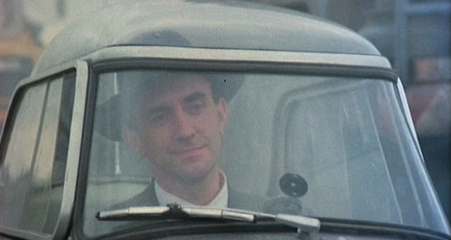Well, first time for me, even more insulting, I consider myself a pop musician, a rock and roller. And an oboe player. I am a dessert topping and a floor polish. I am both. So, I did not even want to go outside to walk down the street. I was sure everybody -- like in a Bunuel film -- was pointing at me and laughing. I was crushed. But as time went on they did put the score to the film. There was a funny anecdote that years later I happened to have a publishing deal as we composers do, we make deals. In that case to but my house. And we made a deal with MCA, a division of Universal. The people who were guilty for Brazil. And they never did release the album. I made the album and handed it in and there was a bruhaha over it. They were so upset. They picked up the album and they threw it down and said: this comes out over my dead body. Something Sheinberg said. So they never released the album and I was still hurting from it. And then they did not sell the film anyway." Fans of the movie would have to wait eight years before the soundtrack was ultimately released. 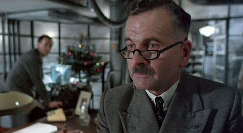Gilliam's intended parable of dehumanization was wholly subverted by Sheinberg's edit, defeating the entire purpose of Brazil, and smooshing the movie into a futuristic fairy tale about a man's quest for a love -- with overextended action sequences and a subplot about terrorism thrown in for flavor. Sheinberg felt that even at 132 minutes, the film would fail. Much to Gilliam's surprise, Sheinberg's editors called him at his London home asking for his input on the new version. Gilliam had no input. He knew they had a crap film, because Gilliam had sent the crap himself. He kept his own cut of the film and shipped Sheinberg's editors only the outtakes, the blooper reels, and unusable footage. 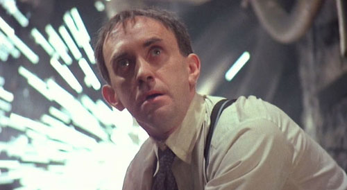In the documentary The Battle of Brazil, Gilliam reflects on this outrage: "What do you mean you want my input? You're not saving my film. You're killing my film. You're destroying my film. You're holding my child and you're asking which limb do you want cut off." Terry Gilliam referred to this cut as Sid Sheinberg's Brazil. Others called it the Love Conquers All remix, while those in the fringe labeled it the Happy Ending cut, in reference to handjobs, prostitution, and the erotic massaging of a proud masterpiece into a limp noodle. Over a year later, the publicity war began. In Gilliam's own words, "It
became a stalemate situation. Arnon Milchan, the producer said we've got to
get lawyers in here and we've got to deal with this -- and I said nah, can't
get lawyers in. They've got all the lawyers in the world. They've got all the
money. They don't have to release the film, it's not going to kill them. They
can sit on it. We'll just have to approach it in a much more personalized way.
So the first thing I did was to take a full page ad out in Variety. The ad read: DEAR SID SHEINBERG, WHEN ARE YOU GOING TO RELEASE MY FILM 'BRAZIL'? When
the idea came up, I just decided to leap in and do it. And the minute I got
my Variety and opened it and saw it, that was the moment. I just went
oh fuck, what have I done? Oh shit, oh no. And that lasted about
five minutes and then it was okay, it's done." When quizzed about his now adversarial relationship with Universal, Gilliam remained firm, attempting to make the battle as personal as possible: "I have a problem with a man named Sid Sheinberg and he looks like this!" Gilliam then pulled out an 8x10 glossy of Sheinberg and pointed to it on national television. "He is the one man standing in the way of America seeing one of the greatest films ever made." The Variety ad tickled the fancy of the Los Angeles Film Critics Association, who were now immensely curious about the film. Since Gilliam was not allowed to show Brazil in North America, he'd been screening the film for critics in clandestine locations. It was unanimous: the Association chose Brazil as the year's best picture. Gilliam won Best Director, and Gilliam, Charles McKeown, and Tom Stoppard were awarded Best Screenplay. 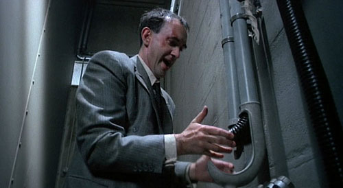Universal released the film two weeks later, where it received Oscar nominations for both its script and Norman Garwood's stunning production design. Universal Pictures, which has the tradition of running a full page ad in Variety congratulating winners if the winning movies are their own, forced Sheinberg to capitulate. Commercially in America, the film did only moderately well. Universal gave it virtually no advertising support, instead focusing their efforts on Out of Africa, which went on to win seven Academy Awards. In the film, Meryl Streep runs a coffee plantation and gets V.D. Today, there are five different versions of Brazil: The Fox European theatrical release, the American 132-minute theatrical and video release, the original European/Japanese video and laserdisc release, the "Final Director's Cut" Criterion Collection DVD set, and the miserable Sheinberg edit -- which unfortunately can still be seen from time to time on broadcast television. Brazil is regarded by many critics, historians, filmmakers, and film buffs as one of the most original and influential movies of the past fifty years. Best-selling fantasy author Harlan Ellison declared Brazil "the finest science fiction movie ever made." 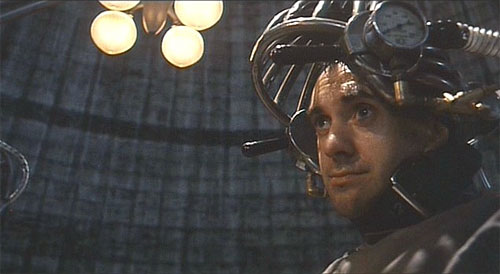Eight years later, Brazil musical composer Michael Kamen remembered a key exchange while renegotiating his contract with MCA, which had accidentally lapsed: "I had a chance now. I said: 'Listen, there is an album somewhere in your vaults probably in LA. And it is sitting on a shelf some place. I have been waiting for this album to come out for eight years. It is from a film called Brazil. And I would like that released. I won't even take your fucking phone call until I see that album in the record stores.' And I left. And they did make the phone call, and the album came out, but by that time I had already another publishing deal with a much bigger advance." Gilliam went on to direct The Adventures of Baron Munchausen, The Fisher King, Twelve Monkeys, and Fear and Loathing in Las Vegas. He jokingly refers to Brazil as the second of a trilogy of movies (the first and third being Time Bandits and Munchausen, respectively). The three films share a related theme of the struggle for imagination and free thinking in a world constantly suppressing such ideas. Gilliam's struggle (and ultimate failure) to film The Man Who Killed Don Quixote was outlined in the film Lost in La Mancha. The documentary offers a fascinating, educational autopsy of a movie idea Gilliam was forced to abandon after a disastrous six-day film shoot was marred by noisy NATO helicopters, horrendous hail storms, physically fragile actors, and Johnny Depp. |